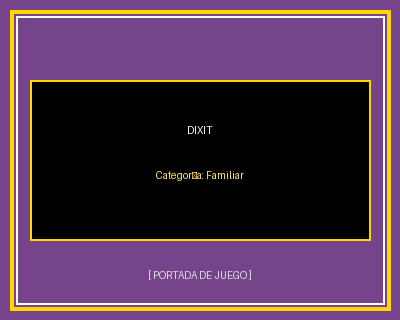
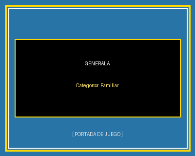

Dixit
Juego poético y familiar con ilustraciones sorprendentes. El narrador da una pista sutil sobre su carta secreta y los demás participantes intentan adivinar cuál es sin que sea obvia.
Descargar Reglamento (.pdf)Portal de Reseñas y Reglamentos de Juegos de Mesa
Propuestas ideales para jugar con cualquier grupo y edad, con reglas claras y partidas accesibles.

Juego poético y familiar con ilustraciones sorprendentes. El narrador da una pista sutil sobre su carta secreta y los demás participantes intentan adivinar cuál es sin que sea obvia.
Descargar Reglamento (.pdf)
Clásico entretenimiento familiar jugado con cinco dados y cubilete. Cada jugador busca armar combinaciones de puntuación (escalera, full, póker, generala) en su plantilla.
Descargar Reglamento (.pdf)